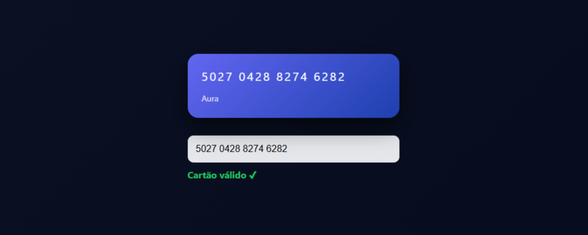

Contato
Email: marcelo.andradesilva26@gmail.com


Desenvolvedor focado em back-end e construção de sistemas eficientes
Busco minha primeira oportunidade na área de desenvolvimento de software, com foco em back-end, onde eu possa aplicar meus conhecimentos, evoluir tecnicamente e contribuir com soluções eficientes.
Sou estudante de Análise e Desenvolvimento de Sistemas e tenho direcionado meus estudos para a área de back-end e engenharia de software. Tenho interesse em entender como os sistemas funcionam na prática, buscando sempre evoluir através de projetos e estudos constantes. Sou uma pessoa organizada, dedicada e com facilidade para aprender, focado em construir uma base sólida para crescer na área de tecnologia.
Java - Intermediário
HTML - Intermediário
CSS - Básico
JavaScript - Básico
C# - Básico
SQL - Básico
Git/GitHub - Básico

Aplicação em JavaScript que identifica a bandeira de cartões de crédito com base no número informado, utilizando validação por padrões numéricos (BIN).
Tech: JavaScript
Ver Projeto GitHubDesenvolvimento de um site completo como trabalho de conclusão de curso, focado em estrutura e layout.
Tech: HTML, CSS
GitHub (em breve)📍 São Paulo - SP
🎓 ADS - São Judas (2027)
💼 Buscando primeira oportunidade
❗ Disponível para estágio e oportunidades como desenvolvedor júnior
Email: marcelo.andradesilva26@gmail.com